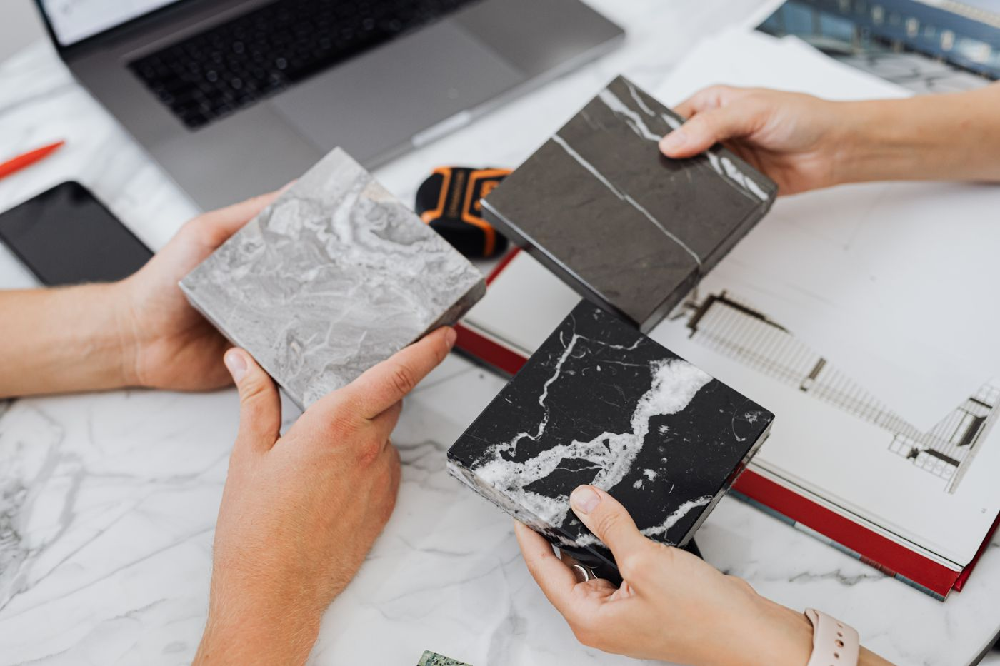
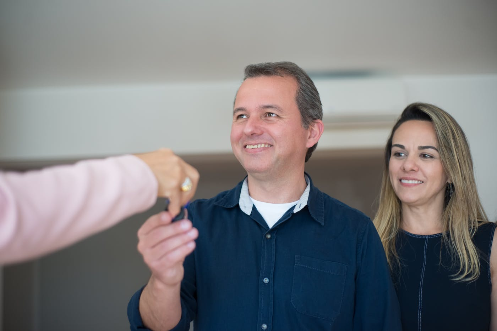

Quick answer: Building a new home in Sydney in 2026 costs $2,800–$4,200 per m² for construction, with the all-in total — design, approvals, site works, contributions, and landscaping — adding $250,000–$450,000 to the build figure before land. Total project time from brief to handover runs 18–26 months for most custom builds. The approval path is either CDC (20 business days if the design meets Housing SEPP standards) or DA (3–9 months depending on council). The decision that matters most happens before you brief anyone: whether building new is actually the right call for your block and your budget.
The building industry has produced a very effective brochure for the idea of building a new home. The renders are luminous. The timeline on the mood board says 12 months. The cost estimate is a round number that arrives before anyone has looked at the soil.
[Right. Straight face now.] This guide is the version with the real numbers in it. What building a new home in Sydney actually costs in 2026, what the process looks like from the outside and from the inside, the hidden costs that blow budgets in the first six months, and the situations in which building new is genuinely the wrong decision.
- The first decision: new build, knockdown rebuild, or renovation?
- What building a new home in Sydney actually costs
- The costs most budgets leave out
- Know your block before you brief anyone
- DA or CDC: the approval path that applies to you
- Choosing the right builder
- Construction stages: what actually happens on site
- Handover, defects, and warranty
- When building new is the wrong move
- FAQ
The First Decision: New Build, Knockdown Rebuild, or Renovation?
Most people who end up building a new home start the conversation thinking they have three options. In practice, the block usually decides for them — if they look at it honestly before they look at renders.
Build on vacant land is the simplest scenario. No demolition, no asbestos assessment, no certifying existing unapproved works. The design starts with a clean brief and a clean site. Less common in established Sydney suburbs, where vacant residential land is rare and expensive. More common in greenfield growth corridors — Schofields, Jordan Springs, Oran Park, Box Hill — where the block is new, flat, and often covenant-restricted.
Knockdown rebuild means demolishing the existing dwelling and constructing a new home on the same land. The dominant model in Sydney’s established middle-ring suburbs, where 1960s–1980s housing stock on 600–900m² blocks is ageing past the point of cost-effective renovation. Add $20,000–$65,000 for demolition, $10,000–$35,000 for asbestos removal if the home predates 1990, and assume a pre-demolition asbestos assessment ($500–$1,500) before any work begins. For a full breakdown by suburb, see our guides to building on the North Shore and building in Western Sydney.
Major renovation — extensions, additions, and full internal refits — makes sense when the existing structure is sound and asbestos-free, the brief can be satisfied without a fundamentally different floor plan, and the renovation scope is under 50–60% of the replacement cost of the whole house. Beyond that threshold, a rebuild typically delivers a better outcome at a comparable or lower total cost.
If you are genuinely unsure which path is right for your block, commission a cost comparison from a builder with real numbers — not a back-of-envelope estimate. A good builder can give you a genuine feasibility read in the first meeting at no cost. This is where TURYN’s process starts: with an honest feasibility conversation before a single design dollar is committed.
What Building a New Home in Sydney Actually Costs

Photo via Pexels
Construction costs in Sydney in 2026 vary widely by suburb, site complexity, and specification. These are the construction-only rates — what it costs to build the house itself, before consultants, approvals, or site works.
| Specification | Construction cost per m² |
|---|---|
| Project / volume home | $1,800 – $2,400 |
| Mid-range custom build | $2,800 – $4,200 |
| Premium / architectural custom | $4,200 – $6,000+ |
A 280m² mid-range custom home costs $784,000–$1.18M to construct. A 350m² well-specified build runs $980,000–$1.47M. These figures assume a straightforward flat site. Add complexity — slope, rock, heritage, basement — and the rate moves up, not down.
Cost rates across Sydney are not uniform. Inner-ring suburbs — the North Shore, Eastern Suburbs, Inner West — run 10–20% higher than middle-ring Western Sydney for equivalent specification, driven by higher trade rates, more complex site conditions, and more restrictive council oversight. A builder who quotes you a flat-rate figure without qualifying it by suburb and site type is giving you a number that will be revised later.
The Costs Most Budgets Leave Out
This is where most new build budgets come undone. Not in the construction rate — in the items that are never in the headline quote but are always in the final account.
- Geotechnical soil test: $1,500–$3,000. Essential before design begins. Reveals reactive clay, rock, groundwater, and fill conditions. A structural engineer designing without a geotech report is guessing; an accurate report is vastly cheaper than founding a slab on the wrong system.
- Surveying: $3,000–$6,000. Site survey, contour survey, identification survey. Required before design and again before construction.
- Architect or building designer: $60,000–$180,000+. Scales with house size and design complexity. Typically charged as a percentage of construction cost (6–12%) or as a fixed fee.
- Structural engineering: $8,000–$20,000. Slab design, frame design, retaining walls. Not optional and not included in most design quotes.
- Energy efficiency assessment: $1,500–$2,500. Required under the NCC 7-star minimum standard now applying to new builds in NSW.
- Development Application and Construction Certificate fees: $5,000–$25,000 combined, depending on council and project value.
- Section 7.11 council contributions: $15,000–$60,000 depending on LGA and dwelling size. These infrastructure levies are often omitted from early budget discussions. Campbelltown and Camden can reach $50,000+ on a new dwelling.
- Utility connections and service relocation: $5,000–$25,000. Water, sewer, gas, NBN, and electricity connection or relocation on a knockdown-rebuild site.
- Retaining walls: $30,000–$150,000+ on sloping sites. One of the biggest budget surprises on North Shore, Eastern Suburbs, and upper North Shore blocks where grades are significant.
- Landscaping, driveway, fencing: $40,000–$120,000. Routinely underestimated. A well-landscaped Sydney home costs materially more than a dirt yard with a path.
- Contingency: Minimum 10% of construction cost. Not optional. Custom builds have variations. Sites have surprises. Build the contingency into the budget from day one, not as an afterthought when the first variation arrives.
Together these typically add $200,000–$400,000 to the base construction figure on a mid-range Sydney custom build. That figure surprises people who worked backwards from a per-m² rate. It should not surprise you.
Know Your Block Before You Brief Anyone
The sequence that produces the most expensive problems in Sydney new builds is: fall in love with a design, then discover the block makes it impossible or prohibitively expensive. The correct sequence is the reverse.
Check the zoning and overlays first. On the NSW Planning Portal, confirm your lot’s zone, whether it carries a heritage overlay, bushfire attack level (BAL) rating, flood or acid sulfate soil mapping, or biodiversity value overlay. Each of these affects what you can build, how you must build it, and what approvals you need. Do this before design begins.
Commission a soil test. This is not a luxury. Reactive clay, basalt rock, fill material, and groundwater all affect your slab and foundation specification. The difference between a standard slab and a pier-and-beam foundation on rock is $40,000–$100,000. Knowing before design means your engineer can design for the actual conditions rather than conservative assumptions.
Assess the slope. A site with a 1:5 to 1:8 grade requires a split-level design, engineered retaining walls, or significant cut-and-fill earthworks. All of these add cost that a flat-block rate does not capture. If your site is sloping and a builder has not discussed this explicitly, ask why.
Check tree preservation orders. Sydney councils — particularly North Shore and Inner West LGAs — apply significant restrictions on the removal or damage of significant trees on private land. A mature tree within the building envelope is a constraint on the design, not just an amenity feature. Check council’s tree register before finalising the brief.
DA or CDC: The Approval Path That Applies to You

Photo via Pexels
Two approval paths exist for new residential construction in NSW. Which one applies determines your timeline more than almost any other decision.
Complying Development Certificate (CDC): Assessed by a private certifier against the Housing SEPP 2021 numerical standards. If your design complies with all prescribed controls — setbacks, height, floor space ratio, site coverage, landscaped area, wall and building height — a CDC can be issued in approximately 20 business days. No council involvement. No neighbour notification. The right path for compliant designs on straightforward sites.
Development Application (DA): Assessed by the relevant council. Required when the site is in a heritage conservation area, carries overlays that exempt it from CDC, or when the design seeks variation from the prescribed controls. Council timelines vary significantly by LGA. For a full comparison of DA timelines across Sydney’s councils, see our detailed breakdown in the Carlingford builder guide and the Western Sydney guide.
Construction Certificate (CC): A separate approval, issued after the DA or CDC, confirming that detailed construction drawings comply with the National Construction Code and any conditions of the planning approval. Required before construction begins. Issued by council or a private accredited certifier. Typically 4–6 weeks from application.
The sequence is: planning approval (DA or CDC) → Construction Certificate → construction begins. Having the DA does not mean you can start building. Both approvals are required, in that order.
Choosing the Right Builder
The builder selection decision happens before design is finalised in most well-run projects — not after. A builder involved early can flag site issues that affect the design, provide realistic cost guidance during documentation, and manage the approval process as part of their scope rather than as an afterthought.
The key checks: verify the NSW contractor licence on the NSW Fair Trading register, confirm home building compensation insurance is current, ask for references from comparable projects in the same LGA, and read the variation clause in the proposed contract before you sign it.
For a full framework covering licence verification, portfolio assessment, reference questions, contract review, and red flags to watch for in meetings, see our comprehensive guide to how to choose a custom home builder.
If you want to see what a well-run custom build looks like in practice, TURYN’s portfolio covers a range of completed projects across Sydney — knockdown rebuilds, extensions, and multi-dwelling developments — with the kind of detail that renders tend to leave out.
Construction Stages: What Actually Happens on Site
Construction of a new home in NSW follows a standard sequence of stages. Each stage is a progress payment milestone under the HIA and MBA contracts. Understanding what each stage involves gives you the ability to assess whether progress claims are accurate and whether site work is proceeding as specified.
| Stage | What happens | Typical duration |
|---|---|---|
| Site preparation | Demolition (if KDR), excavation, service connections, footings | 4–8 weeks |
| Base / slab | Formwork, reinforcement, concrete pour, cure | 2–4 weeks |
| Frame | Structural frame (timber or steel), floor systems, roof structure | 4–8 weeks |
| Lock-up | External cladding, roofing, windows, external doors installed | 6–10 weeks |
| Fix-out / fixing | Internal linings, joinery, fixtures, tiling, painting | 10–16 weeks |
| Practical completion | Final inspections, defects rectification, handover | 2–4 weeks |
Independent building inspections at frame and lock-up stages are worth commissioning at your own cost ($400–$800 each). A qualified building inspector reviewing the work before it is covered by the next stage catches problems while they are still accessible. Most builders will not object to this. A builder who does object is also providing information.
Variations during construction are normal. Material substitutions, owner-initiated changes, and unforeseen site conditions all generate variations. The rule is simple: every variation must be priced and authorised in writing before work proceeds. A builder who proceeds on verbal instruction and reconciles at the end is creating risk for both parties. This is covered in detail in TURYN’s build process and in the variation clause of every HIA and MBA contract.
Handover, Defects, and Warranty

Photo via Pexels
Practical completion is the point at which the builder determines the home is substantially complete and habitable. It is not perfection — minor defects and incomplete items are normal at practical completion and are addressed during the defects liability period.
Defects liability period: 6 months from practical completion in NSW. During this period, the builder is obliged to return and rectify defects identified in writing at their cost. Document everything at handover and in the weeks following — a dated written defects list is the mechanism the contract provides. Use it.
Structural warranty: Under the Home Building Act 1989 NSW, structural defects carry a 6-year warranty from completion. Non-structural defects carry a 2-year warranty. These statutory warranties cannot be waived or reduced by the contract.
Home Building Compensation (HBC) insurance: Required in NSW for residential contracts over $20,000. Provides cover if the builder becomes insolvent, disappears, or dies before completing the work or rectifying defects. Confirm the policy is current and in place before paying any deposit. Ask for a copy of the certificate of insurance — not just a confirmation that it exists.
The period from practical completion to the end of the defects liability period is one of the most revealing tests of a builder’s character. How quickly they return for defect rectification, whether they prioritise genuinely serious issues, and how they handle disagreements about what constitutes a defect versus acceptable variation — all of these tell you more about the builder than any meeting did. When you talk to the TURYN team, ask specifically how they handle post-handover defect claims.
When Building New Is the Wrong Move
This section is the one most new-build guides skip. We are not most guides.
Do not build new if your renovation scope is under 50% of the replacement cost and the existing structure is asbestos-free and structurally sound. A well-executed extension or renovation delivers most of the result at a lower cost and with less disruption than a full rebuild. The case for demolishing a sound house is not always as strong as the renders make it look.
Do not build new if your total project budget — including land, construction, and all professional costs — is under $900,000 in Sydney’s established suburbs. Below that threshold, the constraints on design, specification, and delivery become severe enough that the result rarely matches the brief. Volume builders operate effectively in this space. Custom new builds do not.
Do not build new if you have a fixed move-in date within 16 months and your site requires a DA. Planning approval alone in most Sydney councils takes 3–9 months. No builder controls that timeline, and no builder’s promise changes it.
Do not build new if you are on a block that is zoned for dual occupancy and the feasibility analysis shows that a duplex development produces a better return on the same land. On many established Sydney blocks with strong land values, a duplex outperforms a single-dwelling new build on investment metrics. Run both scenarios before committing to either.
Do not build new if you cannot commit the time the design and selection process requires. A custom new build involves dozens of decisions across 3–5 months of design documentation. If those decisions stall because your schedule cannot accommodate them, the programme slides and the cost of that delay arrives on your progress claims.
FAQ
How much does it cost to build a new home in Sydney in 2026?
Construction costs run $2,800–$4,200 per m² for mid-range custom builds in Sydney in 2026, with architectural and premium specification reaching $4,200–$6,000+. A 300m² home costs $840,000–$1.26M to construct. The all-in total — including design, approvals, site works, council contributions, landscaping, and a 10% contingency — typically adds $250,000–$400,000 to the construction figure, before land.
How long does it take to build a new home in Sydney?
From first meeting to handover: 18–26 months for most custom builds. This includes 3–5 months for design and documentation, 3–9 months for DA approval or 20 business days for a compliant CDC, 4–6 weeks for a Construction Certificate, and 10–16 months of construction. Budget for the longer end at every phase — the only timeline in a new build that is reliably fast is the one you are not relying on.
Do I need a DA or CDC to build a new home in Sydney?
Whether you need a DA or CDC depends on your lot, your council’s planning controls, and your design. CDC allows approval in approximately 20 business days from a private certifier if the design meets all Housing SEPP numerical standards. DA is required for heritage sites, irregular lots, designs seeking variation from prescribed controls, or certain bushfire-affected properties. Confirm which path applies for your specific site in the first meeting with your architect or builder — via the NSW Planning Portal.
What is a Construction Certificate and when do I need it?
A Construction Certificate confirms that your detailed construction drawings comply with the National Construction Code and the conditions of your planning approval (DA or CDC). You need a CC before construction begins — it is separate from and follows the planning approval. Issued by council or a private accredited certifier. Allow 4–6 weeks. Having a DA does not mean you can start building. Both approvals are required, in sequence.
Should I build new or renovate my existing Sydney home?
Build new (or knockdown rebuild) when the existing home contains asbestos, the floor plan is fundamentally wrong for the brief, renovation scope exceeds 50–60% of the replacement cost, or the structure has unapproved extensions that complicate certification. Renovate when the structure is sound and asbestos-free, the brief can be satisfied with additions and upgrades, and the renovation scope is genuinely below the rebuild threshold. If genuinely unsure, commission a cost comparison with real numbers — not estimates — before committing to either path.
What is the defects liability period for a new home in NSW?
The statutory defects liability period is 6 months from practical completion. During this period, the builder must rectify defects at their cost. Structural defects carry a 6-year warranty and non-structural defects carry a 2-year warranty under the Home Building Act 1989. Home Building Compensation (HBC) insurance provides additional cover if the builder becomes insolvent. Confirm insurance is current and obtain the certificate before paying any deposit.
What are the hidden costs when building a new home in Sydney?
Commonly omitted costs include: geotechnical soil test ($1,500–$3,000), surveying ($3,000–$6,000), structural engineering ($8,000–$20,000), energy efficiency assessment ($1,500–$2,500), DA and Construction Certificate fees ($5,000–$25,000), Section 7.11 council contributions ($15,000–$60,000 per dwelling), utility connections and relocations ($5,000–$25,000), retaining walls on sloped sites ($30,000–$150,000+), and landscaping ($40,000–$120,000). Together these typically add $200,000–$400,000 to the base construction figure. Contact TURYN for a detailed cost plan specific to your block and brief.